2.2 · Mô hình MapReduce
Đầu vào Kho tài liệu được chia trên nhiều máy.
Đầu ra Mỗi từ đã xuất hiện đi kèm tổng số lần xuất hiện.
Map phát đóng góp → hệ thống nhóm theo khóa → reduce tổng hợp.
Với kho lớn, giữ và xử lý tất cả trên một máy có thể không phù hợp. Ta bắt đầu bằng đếm từ để thấy từng đóng góp. Đơn vị đếm của ví dụ tiếng Việt là chuỗi tách theo khoảng trắng; đó không phải bài toán phân tích từ vựng. Người dùng viết map và reduce, còn hệ thống bảo đảm nhóm đúng khóa.
Nguồn: MMDS, Chương 2, 2.2.1–2.2.3, Ví dụ 2.1–2.2, trang in 25–27.
Lợi ích của MapReduce
Lợi ích Cơ chế
Song song trên nhiều máy Chia dữ liệu thành nhiều phần việc để xử lý đồng thời Mở rộng bằng thêm máy Bổ sung máy phổ thông để tăng năng lực xử lý Tự phục hồi lỗi máy Phát hiện lỗi, giao lại phần việc bị ảnh hưởng Lập trình gọn hơn Viết Map/Reduce; hệ thống lo phân phối và điều phối Xử lý gần dữ liệu Ưu tiên Map gần bản sao đầu vào để giảm truyền mạng
Lập trình viên mô tả phép tính; hệ thống tổ chức việc thực thi.
Kho tài liệu ở trang trước lớn hơn khả năng xử lý thuận tiện của một máy. Bảng này nêu những việc hệ thống hỗ trợ khi ta mô tả bài toán bằng hai hàm. Nhiều phần việc của Map, hoặc của Reduce, có thể xử lý đồng thời; các giai đoạn vẫn có phụ thuộc dữ liệu. Thêm máy phổ thông tăng tài nguyên, nhưng mức tăng tốc phụ thuộc số phần việc, độ cân bằng tải và lượng dữ liệu phải truyền.
Khả năng phục hồi ở đây xét lỗi máy thực thi: hệ thống phát hiện và giao lại phần việc bị ảnh hưởng. Theo mô hình MMDS, máy bộ điều phối hỏng vẫn có thể buộc khởi động lại toàn bộ công việc. Đặt Map gần bản sao đầu vào là ưu tiên để giảm truyền dữ liệu, không bảo đảm mọi lần đọc đều cục bộ hoặc loại bỏ truyền trung gian. Lập trình viên vẫn phải chọn khóa và bảo đảm tính đúng của hai hàm. Tiếp theo, chạy D1/D2 để xem các đóng góp được phát và nhóm thế nào; phần tổ chức tác vụ và phục hồi phía sau sẽ giải thích từng cơ chế.
Nguồn: MMDS, Chương 2, trang in 21–22; mục 2.2, trang 25–30; slide MMDS Chương 2, trang 24–25. Đối chiếu: Dean và Ghemawat (2004), MapReduce: Simplified Data Processing on Large Clusters , tóm tắt và mục 3.4.
Mỗi lần xuất hiện tạo một đóng góp
Tài liệu Cặp map phát dữ liệu lớn (dữ,1), (liệu,1), (lớn,1) lớn lớn (lớn,1), (lớn,1)
Câu hỏi: Từ “lớn” tạo bao nhiêu cặp trước khi nhóm?
Ví dụ cụ thể hóa cơ chế của Ví dụ 2.1 bằng hai chuỗi đã tách theo khoảng trắng. Có năm đơn vị đếm và năm cặp, trong đó ba cặp mang khóa lớn. Các cặp trùng nhau phải được giữ vì mỗi cặp biểu diễn một lần xuất hiện. Đáp án câu hỏi là ba, không phải hai tài liệu. Bước kế tiếp chỉ đổi cách nhóm, chưa làm mất đóng góp.
Nguồn: MMDS, Chương 2, Ví dụ 2.1, trang in 26; dữ liệu minh họa tiếng Việt được ghi trong storyboard.
Nhóm theo khóa rồi cộng
Khóa Giá trị nhận được Kết quả dữ [1] (dữ,1) liệu [1] (liệu,1) lớn [1,1,1] (lớn,3)
Mọi đóng góp của một từ về cùng một nhóm.
Nhóm theo khóa do hệ thống thực hiện. Reduce được gọi cho một khóa và danh sách các giá trị của khóa đó, không phải cho từng tài liệu. Với khóa lớn, tổng đi qua 0,1,2,3. Thứ tự các số 1 không làm đổi kết quả cộng. Hỏi sinh viên chỉ ra điều gì sẽ sai nếu một cặp lớn bị đưa sang nhóm khác: kết quả thiếu đóng góp.
Nguồn: MMDS, Chương 2, 2.2.2–2.2.3, Ví dụ 2.2, trang in 26–27.
Hai hàm của MapReduce
$\operatorname{Map}: K_1 \times V_1 \to \operatorname{List}(K_2 \times V_2)$
$\operatorname{Reduce}: K_2 \times \operatorname{List}(V_2) \to \operatorname{List}(K_3 \times V_3)$
$K_i$: miền khóa; $V_i$: miền giá trị.
$\operatorname{List}(X)$: danh sách hữu hạn phần tử thuộc $X$;
Hệ thống MapReduce nối hai hàm này bằng bước nhóm theo khóa.
Nguồn: MMDS 2.2.1–2.2.3, tr. 25–27. Trong ví dụ, K_1 là mã tài liệu, V_1 là nội dung; Map bỏ mã tài liệu. K_2 và K_3 là từ; V_2 và V_3 là số nguyên. Cách viết map(tài_liệu) ở trang sau lược khóa đầu vào như sách. Chữ ký mô tả kiểu dữ liệu; luật xử lý cụ thể nằm trong giả mã.
Reduce được gọi đúng một lần cho mỗi khóa có mặt ở dữ liệu trung gian.
Không dựa vào thứ tự tài liệu ban đầu khi cộng các giá trị; phép cộng trong ví dụ không phụ thuộc thứ tự. Khóa đầu ra K_3 có thể khác K_2.
Từ Map đến Reduce
Map phát từng đóng góp; hệ thống gom đủ; Reduce cộng theo từ.
Nguồn: Figure 2.2 (MMDS), áp dụng cho D1, D2 đã có. D1 = "dữ liệu lớn" phát
(dữ,1), (liệu,1), (lớn,1); D2 = "lớn lớn" phát hai cặp (lớn,1). Ba nhóm:
dữ [1], liệu [1], lớn [1,1,1]. Nhãn vai trò: Lập trình viên định nghĩa Map/Reduce;
Hệ thống: nhóm khóa.
Đặc tả bài toán đếm từ
Gọi $T$ là tổng số lần xuất hiện; $f(w)$ là số lần từ $w$ xuất hiện.
Yếu tố Đặc tả Đầu vào Tập hữu hạn tài liệu, tách theo khoảng trắng Đầu ra Đúng một cặp $(w,f(w))$ cho mỗi từ xuất hiện Điều kiện Tách thống nhất; xử lý mỗi lần xuất hiện đúng một lần
D1/D2: $T=5$, từ “lớn” xuất hiện 3 lần.
Đặc tả quy định kết quả, chưa quy định cách thực hiện. Hai tài liệu có thể chứa nhiều lần cùng một từ; đầu ra vẫn chỉ có một cặp cho từ ấy.
Điều kiện tách phải thống nhất và mỗi lần xuất hiện được xử lý đúng một lần; kho từ rỗng cho kết quả rỗng.
Cần phân biệt số tài liệu và số lần xuất hiện của từ: hai đại lượng khác nhau.
Nguồn: MMDS ch2, tr.25–28.
Thuật toán đếm từ
Giả thiết: tách theo khoảng trắng; bộ đếm không tràn; hệ thống nhóm đủ và đúng khóa.
map(tài_liệu):
với mỗi từ w:
phát(w, 1)reduce(w, V):
s ← 0
với mỗi v trong V:
s ← s + v
phát(w, s)Mệnh đề: với tách từ xác định, bộ đếm không tràn và bảo đảm nhóm đúng, đầu ra đếm đúng mọi từ xuất hiện. Map tạo đúng một cặp cho từng lần xuất hiện. Nhóm chứa mọi và chỉ đóng góp của từ đang xét. Cơ sở bất biến: tổng rỗng bằng 0. Duy trì: thêm đúng giá trị tiếp theo. Khi danh sách hữu hạn kết thúc, s bằng số lần xuất hiện của từ. Map dừng vì mỗi tài liệu hữu hạn. Kho rỗng cho đầu ra rỗng. Reduce đọc tuần tự cần một biến tổng; thời gian tuyến tính theo số giá trị nhận, theo mô hình số học đơn vị. Tràn bộ đếm và phân tích tách từ nằm ngoài giả mã này.
Nguồn: MMDS, Chương 2, 2.2.1–2.2.3, trang in 25–27; lập luận đúng từ Ví dụ 2.1–2.2.
Bộ đếm trả đúng số lần xuất hiện
Mệnh đề: mỗi từ xuất hiện được trả cùng số lần xuất hiện của nó.
Bước Lập luận Map và nhóm Mỗi lần xuất hiện tạo một số 1 về đúng từ. Khởi tạo $s=0$: tổng của danh sách rỗng. Sau $j$ lần cộng $s$ bằng tổng $j$ giá trị đã đọc. Khi hết danh sách $s$ là tổng mọi đóng góp của từ.
Dữ liệu hữu hạn nên dừng. Kho rỗng trả đầu ra rỗng.
Bước duy trì lấy tổng của j giá trị cộng giá trị thứ j+1. Giả thiết ở trang trước bảo đảm không mất đóng góp và không tràn số. Với khóa lớn, các trạng thái s là 0,1,2,3. Mỗi giá trị cần một lần cộng trong mô hình số học đơn vị; bộ nhớ phụ của bộ đếm là một biến, chưa gồm nhóm do hệ thống quản lý.
Nguồn: MMDS, Chương 2, 2.2.1–2.2.3, trang in 25–27; diễn giải tính đúng của Ví dụ 2.1–2.2.
Đếm thao tác của thuật toán đếm từ
Xét $T$ lần xuất hiện, chưa gộp. Đếm thao tác trên dữ liệu đã tách; chưa tính nhóm khóa.
Thao tác Số lượng Map phát cặp $T$ cặp Reduce cộng $T$ phép cộng trên toàn công việc Biến tổng mỗi Reduce 1 biến
Ví dụ D1, D2: 5 cặp, 5 phép cộng; riêng từ "lớn" chiếm 3 phép cộng.
Một lần gọi Reduce chỉ giữ biến tổng; bộ đệm của hệ thống tính riêng.
Giả mã khởi tạo tổng bằng 0 rồi cộng mỗi giá trị, kể cả giá trị đầu tiên. Vì thế số phép cộng bằng số giá trị nhận. Phép đếm suy ra từ giả mã trong bài, không trích nguyên văn nguồn.
Mô hình số học theo đơn vị: một lần phát cặp hay một cập nhật coi như một đơn vị; O(1) bộ nhớ phụ của một lời gọi Reduce không gồm khóa và phần hệ thống.
Tổng công việc duyệt từ đã tách là O(T) với T >= 1: đây chỉ là công việc duyệt, không gồm khởi tạo và không gồm các lời gọi Map trên các tài liệu rỗng. Map phát cặp $(w,1)$, mỗi lần xuất hiện phát đúng một cặp.
Phần 2.5 tính riêng chi phí dữ liệu theo byte. Nguồn: MMDS 2.2.1–2.2.3, trang 25–27.
Gộp cục bộ trước khi truyền
D2 chưa gộp (lớn,1), (lớn,1)
Toàn ví dụ: 5 cặp → 4 cặp; tổng cuối vẫn là (lớn,3).
Phép cộng giữ cùng ý nghĩa, có tính kết hợp và giao hoán. Reduce phải đúng cả khi bộ kết hợp không chạy.
Trung bình cần giữ (tổng, số lượng) , rồi chia ở cuối.
Bộ kết hợp là phép tổng hợp cục bộ trước khi gửi trung gian. Với phép cộng, kết hợp và giao hoán cho phép cộng các tổng nhóm theo bất kỳ thứ tự; trạng thái vẫn biểu diễn cùng số lần xuất hiện. Bộ kết hợp có thể không được chạy, nên reduce cuối vẫn phải xử lý đúng các giá trị nhận được. Không thay cộng bằng max dù max cũng kết hợp/giao hoán: như vậy đổi ý nghĩa bài toán. Trung bình cục bộ cần giữ cả tổng và số lượng. Mức giảm số byte còn phụ thuộc độ dài biểu diễn của từng cặp; ở đây chỉ đếm số cặp.
Nguồn: MMDS, Chương 2, 2.2.4, trang in 27–28.
Khóa, tác vụ và máy
Đơn vị Vai trò trong thực thi Hàm Map / Reduce Mã do lập trình viên định nghĩa Tác vụ Map / Reduce Phần công việc được giao để thực hiện Tiến trình thực thi (Worker) Chạy tác vụ trên một máy Bộ điều phối (Master) Tạo, phân công và theo dõi các tác vụ
Một tác vụ Reduce gọi hàm Reduce cho từng khóa được giao.
Hàm là quy tắc xử lý, không phải một tiến trình hoặc một máy. Một tác vụ Map gọi cùng hàm Map trên các phần tử trong phần dữ liệu nó nhận. Một tác vụ Reduce thực hiện nhiều lần gọi Reduce, mỗi lần một khóa và danh sách giá trị. Một lần gọi cho một khóa là reducer theo thuật ngữ sách. Worker là tiến trình trên máy tính toán; trong mô hình Hình 2.3, Worker thường chuyên Map hoặc Reduce. Không đồng nhất một khóa, một tác vụ và một máy. Chương trình dùng thư viện để khởi tạo bộ điều phối và các tiến trình thực thi. Các trang tiếp theo tách tạo công việc khỏi phân bổ máy.
Nguồn: MMDS, Chương 2, 2.2.2–2.2.5, trang in 27–29; Hình 2.3.
Tạo tác vụ Map từ dữ liệu đầu vào
Chương trình chọn số tác vụ; bộ điều phối tạo công việc.
Một phần có thể chứa nhiều tài liệu; hàm Map được gọi cho từng tài liệu.
Ta minh họa D1 và D2 nằm trong hai phần khác nhau, mỗi phần có một tài liệu. Đây là cách áp dụng dữ kiện đã có để giải thích nguồn, không phải quy định một tài liệu luôn tạo một tác vụ. Sách cho phép mỗi tác vụ nhận một hoặc nhiều khối; một tác vụ cho mỗi khối là lựa chọn hợp lý, không phải đẳng thức bắt buộc. Các phần tử đầu vào không cắt qua hai khối trong mô hình sách. Số tác vụ Map không bị buộc bằng số máy. Map 0 và Map 1 dùng cùng mã, khác tập phần tử được giao. Phần đầu vào nằm trên hệ tệp phân tán; vị trí máy chạy sẽ do bộ điều phối quyết định.
Nguồn: MMDS, 2.2.1 và 2.2.5, trang in 25–26,29; minh họa D1/D2 đã có.
Phân chia khóa cho các tác vụ Reduce
Chọn $r$ tác vụ Reduce; hàm $h(k)$ chọn một tác vụ từ $0$ đến $r-1$.
Cùng khóa phải về cùng tác vụ; một tác vụ có thể nhận nhiều khóa.
Ví dụ chọn r=2, R0 và R1 là tên hai tác vụ Reduce. Hàm phân chia minh họa h(dữ)=h(liệu)=0, h(lớn)=1; không khẳng định đây là giá trị băm mặc định. Mỗi Map phân cặp phát ra vào r tệp cục bộ, mỗi tệp dành cho một tác vụ Reduce. Hai Map và hai Reduce tạo bốn tệp theo mô hình sách, tệp dành cho R0 của Map 1 rỗng trong ví dụ. Khi Reduce nhận các tệp dành cho nó từ mọi Map, hệ thống nhóm các cặp theo khóa trước từng lần gọi Reduce. R0 nhận hai nhóm dữ và liệu, R1 nhận nhóm lớn chứa ba giá trị. Hàm h quyết định tác vụ đích, không quyết định máy vật lý. Người dùng có thể cung cấp hàm phân chia khác, nhưng không được chia một khóa cho nhiều tác vụ trong mô hình này. Nhiều tác vụ Reduce làm tăng số tệp trung gian mỗi Map; khóa nóng vẫn có thể gây lệch tải.
Nguồn: MMDS, Chương 2, 2.2.2–2.2.5, trang in 27–29; Hình 2.3.
Bộ điều phối phân bổ tác vụ lên máy
Ưu tiên chạy Map gần dữ liệu đầu vào.
Sơ đồ là phân công minh họa, không là ảnh chụp bốn tác vụ chạy đồng thời. Mũi tên biểu diễn lệnh giao việc, không phải đường truyền toàn bộ dữ liệu qua Master. Bộ điều phối lưu trạng thái chờ, đang chạy ở Worker nào và hoàn thành. Worker báo xong, bộ điều phối cập nhật rồi giao công việc tiếp; khi số tác vụ nhiều hơn Worker, chúng chạy qua nhiều đợt. Tối ưu gần dữ liệu giúp giảm truyền đầu vào, không bảo đảm mọi Map luôn chạy trên máy có bản sao. Map 0,1 ở A,B tạo tệp trung gian cục bộ; Master được báo vị trí/kích thước và cung cấp vị trí tệp cho các tác vụ Reduce ở C,D. Reduce đọc dữ liệu từ nơi lưu tệp. Sau lỗi có thể đổi máy mà không đổi phần công việc logic. Số tác vụ là số phần việc, không phải số máy.
Nguồn: MMDS, 2.2.5, Hình 2.3, trang in 28–29; slide MMDS Chương 2, trang 24–25.
Lưu trữ quyết định phần cần chạy lại
Dữ liệu Nơi lưu trong mô hình sách Khi máy thực thi hỏng Đầu vào Map Hệ tệp phân tán, có bản sao Còn nguồn để đọc lại Trung gian Map Đĩa cục bộ của máy chạy Map Có thể mất nơi Reduce cần đọc Kết quả Reduce đã xong Hệ tệp phân tán Được giữ nhờ lớp lưu trữ
Bộ điều phối kiểm tra Worker định kỳ; khi phát hiện lỗi, đưa các tác vụ bị ảnh hưởng về trạng thái chờ.
Giả thiết bản sao đầu vào và kết quả hoàn thành trong hệ tệp phân tán còn truy cập được. Không kết luận mọi lỗi đều được che giấu; mất toàn bộ bản sao nằm ngoài tình huống này. Bộ điều phối định kỳ kiểm tra phản hồi của Worker; không đặt một ngưỡng thời gian cụ thể ngoài nguồn. Mất máy Map làm mất tệp trung gian cần cho Reduce, nên tình trạng “đã hoàn thành tính toán” chưa đủ để giữ kết quả. Hai trang sau theo dõi từ phát hiện đến tạo dữ liệu thay thế và cập nhật nơi đọc.
Nguồn: MMDS, 2.1.2, 2.2.5–2.2.6, trang in 23–24,29–30.
Phục hồi khi máy Map hỏng
Mất tệp trung gian cục bộ: cả Map đã hoàn thành cũng phải chạy lại.
Câu hỏi: Tại sao tác vụ Map đã hoàn thành vẫn phải chạy lại?
Bộ điều phối định kỳ kiểm tra các tiến trình thực thi; máy không phản hồi được coi là hỏng. Mọi tác vụ Map trên máy đó được đặt về trạng thái chờ — kể cả tác vụ đã hoàn thành, vì tệp trung gian nằm trên đĩa cục bộ của máy hỏng đã mất. Bộ điều phối giao lại tác vụ cho tiến trình thực thi khác, đọc lại đầu vào từ hệ tệp phân tán, chạy Map tạo tệp trung gian mới, rồi cập nhật vị trí tệp cho các tác vụ Reduce.
Ví dụ minh họa (tên máy chỉ mang tính minh họa): Map 0 trên máy A hỏng → Map 0 chạy lại trên máy E; D2, Map 1 trên máy B giữ nguyên. Reduce 0 và Reduce 1 cần đầu ra mới của Map 0.
Đáp án: vì đầu ra (tệp trung gian) của Map nằm trên đĩa cục bộ máy hỏng, không còn cho Reduce đọc, nên phải chạy lại để tạo tệp mới. Nguồn: 2.2.6, tr. 30.
Phục hồi khi máy Reduce hỏng
Chỉ chạy lại tác vụ Reduce đang thực hiện trên máy hỏng.
Câu hỏi: Reduce 0 đã hoàn thành có phải chạy lại không?
Nếu máy bộ điều phối hỏng: khởi động lại toàn bộ công việc theo mô hình sách.
Reduce 1 đang chạy trên máy D, máy D hỏng → bộ điều phối đặt Reduce 1 về chờ → máy F đọc lại các tệp Map còn tồn tại → chạy lại Reduce 1 → ghi kết quả ra hệ tệp phân tán. Reduce 0 đã hoàn thành, kết quả đã nằm trên hệ tệp phân tán nên giữ nguyên.
Chỉ cần chạy lại tác vụ Reduce đang chạy của máy hỏng, không phải mọi Reduce. Các tệp Map vẫn còn nên không phải chạy lại Map; nếu tệp Map cũng mất thì áp dụng trường hợp máy Map hỏng.
Đáp án: Không, vì kết quả của Reduce 0 đã ghi ra hệ tệp phân tán, được giữ khi lớp lưu trữ phân tán còn hoạt động. Lưu ý đặc biệt: nếu máy bộ điều phối hỏng thì toàn bộ công việc phải khởi động lại theo mô hình sách (tr. 30); điều này là mô hình của sách, không khẳng định mọi hệ thống hiện đại. Nguồn: 2.2.5–2.2.6, tr. 29–30.
Bài tập 2.2.1(a) · Lệch tải khi chưa gộp
Kho tài liệu rất lớn, chẳng hạn một bản sao kho trang Web; đếm từ bằng 100 tác vụ Map.
Câu hỏi: Không dùng bộ kết hợp. Thời gian xử lý danh sách của các reducer có lệch đáng kể không? Giải thích.
Sản phẩm: giải thích bằng độ dài danh sách và cách gán khóa.
Có thể lệch đáng kể: số lần xuất hiện của từng từ khác nhau nhiều, reducer của từ thường gặp phải đọc danh sách dài. Đây là nhận định theo phân bố từ tự nhiên, không là định lý mọi tập dữ liệu đều lệch. Phân biệt reducer theo khóa với Reduce task.
Nguồn: MMDS, Chương 2, Bài tập 2.2.1(a), trang in 30 / PDF 11.
Bài tập 2.2.1(b) · Gom reducer vào tác vụ
Kho tài liệu rất lớn, chẳng hạn một bản sao kho trang Web; đếm từ bằng 100 tác vụ Map.
Câu hỏi: Gán ngẫu nhiên các reducer vào 10 tác vụ Reduce. So sánh mức lệch với cách gán vào 10000 tác vụ Reduce.
Sản phẩm: giải thích bằng độ dài danh sách và cách gán khóa.
Với 10 tác vụ, mỗi tác vụ thường nhận nhiều khóa nên tổng tải có xu hướng được san đều hơn. Với 10000 tác vụ, ít khóa mỗi tác vụ hơn nên từ phổ biến có thể chi phối một tác vụ. Không bảo đảm 10 tác vụ luôn cân bằng: một khóa cực lớn vẫn có thể gây lệch; gán ngẫu nhiên không chia nhỏ chính khóa ấy. Không suy ra 10000 tác vụ luôn chạy chậm hơn vì còn lịch và số máy.
Nguồn: MMDS, Chương 2, Bài tập 2.2.1(b), trang in 30 / PDF 11.
Bài tập 2.2.1(c) · Tác động của bộ kết hợp
Kho tài liệu rất lớn, chẳng hạn một bản sao kho trang Web; đếm từ bằng 100 tác vụ Map.
Câu hỏi: Dùng bộ kết hợp tại cả 100 tác vụ Map. Mức lệch có còn đáng kể không? Giải thích.
Sản phẩm: giải thích bằng độ dài danh sách và cách gán khóa.
Tiếp: bài tập thiết kế thuật toán
Nếu mỗi Map task gộp toàn bộ các lần xuất hiện của từng từ thành một tổng, mỗi từ gửi tối đa 100 tổng sang reduce. Danh sách từ phổ biến ngắn đi rất nhiều, nên mức lệch thời gian reduce giảm. Đây là mô hình gộp theo tác vụ của bài tập; triển khai có thể chạy bộ kết hợp nhiều lần trên nhiều mảnh nên không mặc định cận 100 cho mọi triển khai. Từ hiếm vẫn có danh sách ngắn hơn và Map vẫn có thể lệch tải.
Nguồn: MMDS, Chương 2, Bài tập 2.2.1(c), trang in 30 / PDF 11.
2.3 · Nhân ma trận–vector
Ma trận liên kết Web có thể quá lớn để giữ trên một máy. Ta lưu các phần tử khác không bằng bộ $(i,j,m_{ij})$.
Đầu vào: ma trận $M$ cỡ $n\times n$, vector $v$ dài $n$.
$i$: hàng; $j$: cột; $1\le i,j\le n$.
Đầu ra: $x=Mv$.
Mỗi hàng cần một tổng các tích:
$x_i=\sum_{j=1}^{n}m_{ij}v_j$.
Tình huống nguồn là tính toán trên ma trận rất lớn, chẳng hạn ma trận liên kết Web; ma trận thường thưa nên chỉ lưu các phần tử khác không. Không cần dựng toàn bộ ma trận đặc trên một máy. Khôi phục ý nghĩa nhân hàng với vector trước khi bàn MapReduce: thành phần $x_i$ là tổng các tích $m_{ij}v_j$ có cùng chỉ số hàng $i$; về đại số mỗi hàng có $n$ tích; các tích bằng 0 do phần tử không lưu được lược trong thuật toán. Phân biệt chỉ số hàng $i$ và cột $j$. Với dữ liệu nhỏ vừa một máy, nguồn lưu ý không cần MapReduce. Dùng chính công thức nguồn, không thêm ma trận số ngoài tài liệu.
Nguồn: MMDS, Chương 2, 2.3.1, trang in 31–32.
Khóa hàng gom đúng các tích
Xét hàng $i$; gọi $p_j=m_{ij}v_j$ là đóng góp của cột $j$.
Đọc phần tử Cặp Map phát Tổng sau khi nhận Chưa đọc Chưa có $s=0$ $(i,1,m_{i1})$ $(i,p_1)$ $s=p_1$ $(i,2,m_{i2})$ $(i,p_2)$ $s=p_1+p_2$ Các phần tử còn lại Cùng khóa $i$ $s=\sum_j p_j=x_i$
Thứ tự cột ở đây dùng để chạy tay; hệ thống có thể giao các tích theo thứ tự khác.
Vết ký hiệu: tổng khởi tạo bằng 0, rồi cộng $m_{i1}v_1$, sau đó cộng $m_{i2}v_2$, tiếp tục đến hết hàng. Mỗi phần tử ma trận tạo đúng một tích và mang khóa hàng $i$; reduce cộng toàn bộ tích của hàng, nên trả $x_i$. Nếu lưu thưa, các phần tử không lưu được hiểu bằng 0; hàng không phát cặp cũng phải được hiểu là kết quả 0 hoặc được bổ sung theo quy ước đầu ra. Các vòng duyệt hữu hạn nên dừng. Số học dấu phẩy động có thể làm tổng khác một ít theo thứ tự cộng: lập luận đại số xét số thực chính xác. Giả mã tách sang trang sau.
Nguồn: MMDS, Chương 2, 2.3.1, trang in 31–32.
Giả mã nhân ma trận–vector
Mỗi vị trí khác không lưu đúng một lần. Mỗi tác vụ giữ được $v$ trong bộ nhớ; xét số học chính xác.
map(i,j,m): phát(i, m × v[j])
reduce(i,V):
s ← 0
với mỗi p trong V: s ← s + p
phát(i, s)Mỗi tích được phát đúng một lần; nhóm theo $i$ thu đủ tích của hàng. Bất biến cộng tổng cho $s=x_i$ khi dừng.
Vị trí không lưu bằng 0; hàng không phát cặp được hiểu là $x_i=0$.
Trước map, mỗi tác vụ cần vector v có sẵn trong bộ nhớ; đây là điều kiện áp dụng của phương án này. Mỗi phần tử ma trận được phát đúng một lần, các cặp cùng khóa hàng i được nhóm lại; reduce cộng theo thứ tự bất kỳ, khởi tạo s = 0 rồi cộng từng tích, nên trả x_i. Hàng không có phần tử lưu: không có cặp nào, quy ước đầu ra hiểu x_i = 0. Số học chính xác. Chi phí cục bộ của map tuyến tính theo số phần tử lưu của hàng; reduce tuyến tính theo số tích nhận. Chi phí đọc vector v xét ở mục 2.5, không tính ở đây.
Nguồn: MMDS, Chương 2, 2.3.1, trang in 31–32.
Chia dải khi vector không vừa bộ nhớ
Đọc dải vector vào bộ nhớ → duyệt phần ma trận tương ứng → phát $(i,m_{ij}v_j)$.
Mỗi map task nhận một phần của dải ma trận và đọc toàn bộ dải vector tương ứng. Chọn số dải để phần vector cần dùng vừa bộ nhớ. Khóa kết quả vẫn là hàng i, do đó các đóng góp từ những dải khác nhau vẫn cộng về cùng thành phần x_i. Không nhầm chia dải với bỏ các tích ở dải khác. Chi phí đọc vector có thể lặp giữa tác vụ; phần bài tập chi phí yêu cầu ghi rõ số lần đọc. Sách dùng năm dải để minh họa, không khẳng định năm luôn đủ.
Nguồn: MMDS, Chương 2, 2.3.2, Hình 2.4, trang in 32.
Công việc và bộ nhớ khi nhân ma trận–vector
$z$: số phần tử ma trận được lưu; $L$: độ dài dải vector một tác vụ dùng. Chưa gộp tích cục bộ.
Đại lượng Số lượng Map nhân $z$ phép nhân Reduce cộng $z$ phép cộng Bộ nhớ vector $n$ phần tử; chia dải còn $L$ phần tử
Đếm phép tính trên toàn công việc; tính vùng vector cho một tác vụ.
Chi phí đọc lặp vector được tính ở mục 2.5.
Giả mã khởi tạo tổng 0 rồi cộng từng giá trị, nên tổng là z phép cộng (không z-n); truy cập vector, phép nhân và cộng tính theo đơn vị.
z là số lần phát trung gian; mỗi Reduce giữ 1 biến tổng ngoài vùng đầu vào.
Số học chính xác là giả thiết của phép chứng minh, còn đơn vị là mô hình đếm riêng.
Chi phí đọc vector ở 2.5 có thể lặp lại; nếu z = 0 thì kết quả ngầm là toàn 0; không nói tổng CPU bằng z khi chưa tính chi phí đọc vector.
Các phép đếm suy ra từ giả mã MMDS 2.3.1–2.3.2, trang 31–32.
Bài tập 2.3.1(a) · Số nguyên lớn nhất
Đầu vào: một tệp số nguyên rất lớn. Khóa đầu ra có thể bị bỏ qua.
Câu hỏi: Thiết kế MapReduce để trả số nguyên lớn nhất.
Sản phẩm: map/reduce, trạng thái trung gian và lập luận đúng.
Map phát (0,x), reduce lấy max. Có thể gộp max cục bộ trước. Bất biến sau khi đọc j số: m là lớn nhất trong j số đã đọc. Khởi tạo từ phần tử đầu hoặc âm vô cùng; không dùng 0 vì dữ liệu có thể toàn số âm. Tệp rỗng cần báo không có kết quả. Đọc N số, O(N) công việc cộng dồn, O(1) trạng thái mỗi nhóm, N cặp nếu chưa gộp.
Nguồn: MMDS, Chương 2, Bài tập 2.3.1(a), trang in 40 / PDF 21.
Đánh giá lời giải: N phần tử, chưa gộp: N−1 lần so sánh khi N>0; giữ một giá trị lớn nhất. Tổng đầu vào Map và Reduce là 2N bản ghi chuẩn hóa. Mô hình số học đơn vị; chưa gồm nhóm khóa, bộ đệm hệ thống và ghi đầu ra cuối. Đơn vị bản ghi không phải byte; các kiểu có thể dài khác nhau. Đây là suy ra từ lời giải theo mục 2.5.1.
Bài tập 2.3.1(b) · Trung bình các số nguyên
Đầu vào: một tệp số nguyên rất lớn. Khóa đầu ra có thể bị bỏ qua.
Câu hỏi: Thiết kế MapReduce để trả trung bình các số nguyên.
Sản phẩm: map/reduce, trạng thái trung gian và lập luận đúng.
Map phát (0,(x,1)); reduce cộng từng thành phần thành (S,N), xuất S/N nếu N>0. Bộ kết hợp cũng cộng hai thành phần, chưa chia. Bất biến S là tổng, N là số phần tử đã đọc. Trung bình của trung bình không đúng khi các nhóm có kích thước khác nhau. Tệp rỗng không có trung bình. O(N) công việc cộng dồn, trạng thái O(1) nếu số nguyên và bộ đếm có độ dài cố định trong mô hình.
Nguồn: MMDS, Chương 2, Bài tập 2.3.1(b), trang in 40 / PDF 21.
Đánh giá lời giải: N phần tử, chưa gộp: N lần cộng tổng và N lần cộng số lượng, một lần chia khi N>0; giữ hai biến. Tổng đầu vào hai tầng là 2N bản ghi chuẩn hóa. Mô hình số học đơn vị; chưa gồm nhóm khóa, bộ đệm hệ thống và ghi đầu ra cuối. Đơn vị bản ghi không phải byte; các kiểu có thể dài khác nhau. Đây là suy ra từ lời giải theo mục 2.5.1.
Bài tập 2.3.1(c) · Mỗi số chỉ xuất hiện một lần
Đầu vào: một tệp số nguyên rất lớn. Khóa đầu ra có thể bị bỏ qua.
Câu hỏi: Thiết kế MapReduce để trả mỗi số chỉ xuất hiện một lần.
Sản phẩm: map/reduce, trạng thái trung gian và lập luận đúng.
Map phát (x,1); reduce theo x phát (0,x) một lần. Mọi bản sao x cùng khóa nên không mất giá trị nào và không còn trùng ở đầu ra. Không cần giữ toàn bộ danh sách giá trị, chỉ nhận biết nhóm xuất hiện. Không bảo đảm thứ tự số trong tệp cuối. O(N) số cặp phát; chi phí nhóm do hệ thống xử lý, không bỏ qua nó khi phân tích cài đặt cụ thể.
Nguồn: MMDS, Chương 2, Bài tập 2.3.1(c), trang in 40 / PDF 21.
Đánh giá lời giải: N phần tử, D giá trị khác nhau: duyệt N giá trị ở các nhóm, phát D kết quả. Một lời gọi giữ trạng thái hằng số ngoài khóa; tổng đầu vào hai tầng là 2N bản ghi chuẩn hóa. Mô hình số học đơn vị; chưa gồm nhóm khóa, bộ đệm hệ thống và ghi đầu ra cuối. Đơn vị bản ghi không phải byte; các kiểu có thể dài khác nhau. Đây là suy ra từ lời giải theo mục 2.5.1.
Bài tập 2.3.1(d) · Số lượng giá trị khác nhau
Đầu vào: một tệp số nguyên rất lớn. Khóa đầu ra có thể bị bỏ qua.
Câu hỏi: Thiết kế MapReduce để trả số lượng giá trị khác nhau.
Sản phẩm: map/reduce, trạng thái trung gian và lập luận đúng.
Tiếp: bài tập tính chi phí
Một lời giải hai công việc: công việc 1 map (x,1), reduce mỗi x phát (0,1); công việc 2 cộng các số 1. Nếu có D giá trị khác nhau, công việc 1 tạo D đóng góp; tổng cuối bằng D. Tệp rỗng có D=0 theo quy ước đếm; hệ thống cần trả 0 nếu không tạo nhóm. Đây là phương án phân tán tự nhiên, không chứng minh hai công việc là bắt buộc: có thể gom toàn bộ vào một reducer và dùng tập hợp nhưng bộ nhớ tăng O(D).
Nguồn: MMDS, Chương 2, Bài tập 2.3.1(d), trang in 40 / PDF 21.
Đánh giá lời giải: N phần tử, D giá trị khác nhau: hai công việc nhận tổng 2N+2D bản ghi chuẩn hóa; công việc sau cộng D số 1. Với đầu vào rỗng, bên gọi trả 0 khi không có đầu ra. Mô hình số học đơn vị; chưa gồm nhóm khóa, bộ đệm hệ thống và ghi đầu ra cuối. Đơn vị bản ghi không phải byte; các kiểu có thể dài khác nhau. Đây là suy ra từ lời giải theo mục 2.5.1.
2.4 · Từ văn bản đến chuỗi xử lý dữ liệu
Đếm số lần xuất hiện của mỗi từ sau khi bỏ từ dừng “và”.
Tài liệu Nội dung A dữ liệu và giải thuật B dữ liệu lớn
Kết quả: (dữ,2), (liệu,2), (giải,1), (thuật,1), (lớn,1).
Với kho lớn, các bước phải xử lý được dữ liệu trên nhiều máy.
Phần trước thiết kế Map/Reduce cho một phép tính. Phần này thêm xử lý trước khi đếm để thấy một chương trình có nhiều bước phụ thuộc. A/B là ví dụ Việt hóa mới của MMDS Ví dụ 2.7–2.8, không đổi D1/D2 của phần 2.2. Có 8 đơn vị sau tách, bỏ đúng một “và” còn 7; 5 khóa kết quả. Danh sách từ dừng chỉ gồm “và” trong ví dụ, không là danh sách chuẩn cho tiếng Việt. Không coi “dữ liệu” là một đơn vị vì quy ước tách khoảng trắng. Kho rỗng cho đầu ra rỗng; đếm số nguyên không tràn. Nguồn: MMDS 2.4.2, trang 44–45; mở rộng bài toán đếm từ đã học.
Đầu ra một bước là đầu vào bước sau
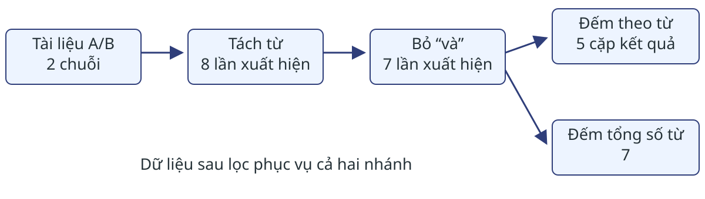
Mũi tên biểu diễn phụ thuộc dữ liệu; mỗi hộp là một bước xử lý.
Một kết quả trung gian có thể phục vụ nhiều phép tính tiếp theo.
Đọc lần lượt A/B → 8 từ → 7 từ sau lọc → 5 cặp đếm. Nhánh thứ hai đếm tổng số phần tử còn lại, cho 7, không phải 5 từ phân biệt. Nhánh này minh họa nhu cầu dùng lại dữ liệu sẽ gặp ở phần lưu đệm. Mỗi bước cần đúng dữ liệu đầu vào của nó; hai nhánh dùng cùng dữ liệu lọc. Sơ đồ không quy định mỗi hộp là một máy, tác vụ hay công việc MapReduce riêng. Hệ thống có thể ghép các phép biến đổi theo phần; hình chưa là lịch chạy. Đây là đồ thị phụ thuộc có hướng không chu trình: không có đường quay lại bước trước. Thay hình f,g,h,i,j của MMDS Hình 2.6 bằng sơ đồ ví dụ cụ thể, không coi là bản vẽ lại nguyên hình nguồn. Nguồn: MMDS 2.4.1, trang 41–43; Ví dụ 2.7–2.9, trang 44–47; nhánh đếm tổng là áp dụng hành động count theo Apache Spark RDD Guide.
Hadoop: lưu dữ liệu và chạy MapReduce
Hadoop là một hệ sinh thái gồm nhiều thành phần; trong bài này ta chỉ xét hai thành phần cốt lõi sau.
Thành phần Vai trò
HDFS Hệ tệp phân tán Hadoop: lưu khối và bản sao. Hadoop MapReduce Chia, lập lịch và chạy lại các tác vụ MapReduce trên cụm máy.
Trên ví dụ đếm từ với văn bản A/B, HDFS giữ các tệp văn bản dạng khối, còn MapReduce thực hiện các bước Map → nhóm → Reduce trên dữ liệu đó.
Nguồn: Apache Hadoop (https://hadoop.apache.org); MMDS mục 2.1 và 2.4 (phần mở đầu).
Ví dụ văn bản trong Hadoop MapReduce
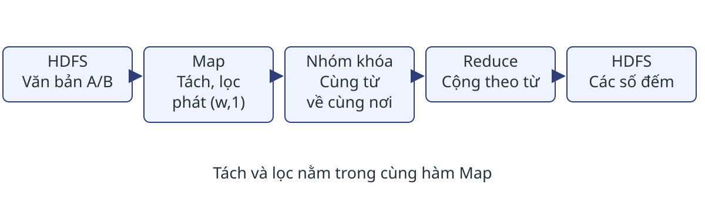
Map có thể tách từ, bỏ “và” rồi phát $(w,1)$ trong cùng một hàm.
Nhiều bước xử lý trong ví dụ này vẫn chỉ cần một công việc MapReduce.
Map duyệt từng đơn vị của tài liệu, bỏ từ thuộc danh sách dừng, phát một cặp cho mỗi đơn vị còn lại. Hệ thống nhóm theo từ và Reduce cộng như phần 2.2. Như vậy khóa dữ và khóa liệu, mỗi khóa nhận hai đóng góp, ba khóa còn lại mỗi khóa nhận một. Bộ kết hợp tùy chọn có thể giảm số cặp thực sự truyền. HDFS chứa đầu vào và kết quả công việc; trung gian Map thường ở đĩa cục bộ, không đồng nhất mọi dữ liệu trung gian với HDFS. Nếu một ứng dụng cần nối nhiều công việc MapReduce qua tệp, đầu ra công việc trước có thể thành đầu vào công việc sau; ví dụ này không bắt buộc cách chia đó. Nguồn: vận dụng thuật toán MMDS 2.2.1–2.2.4 và Ví dụ 2.8; Apache Hadoop MapReduce Tutorial, phần Mapper, Reducer, Job Input/Output. Hình thể hiện cách cài đặt minh họa, không trích nguyên hình sách.
Spark: biến đổi các phần dữ liệu
Tập dữ liệu phân tán có khả năng khôi phục (RDD):
Xét riêng tài liệu A: “dữ liệu và giải thuật”.
Biến đổi Kết quả
map (tách) 1 danh sách chứa 5 từ flatMap (tách) 5 phần tử từ filter sau flatMap 4 từ, đã bỏ “và”
Lưu ý: tên map ở Spark trả về 1 đối tượng cho mỗi phần tử, khác với MapReduce phát 0..n cặp.
Trong hai hàng đầu, map và flatMap là hai lựa chọn thay thế trên cùng tài liệu A. Hàng filter áp dụng sau flatMap, không áp dụng trực tiếp lên danh sách mà map trả về. RDD giữ các lần xuất hiện lặp; không hiểu tập dữ liệu như tập hợp loại trùng. Với tài liệu rỗng, map(tách) vẫn trả một danh sách rỗng, còn flatMap không phát phần tử. Nguồn: MMDS 2.4.2, trang 44–45.
Spark: từ chuỗi biến đổi đến kết quả
Giả mã đọc cả hai tài liệu A và B:
van_ban = doc_tep(thu_muc_A_B)
tu = van_ban.flatMap(tach_khoang_trang)
sach = tu.filter(w => w != "và")
cap = sach.map(w => (w, 1))
dem = cap.reduceByKey((a, b) => a + b)
dem.saveAsTextFile(thu_muc_ket_qua)reduceByKey cộng các giá trị có cùng khóa; saveAsTextFile yêu cầu thực thi và ghi kết quả ra thư mục.
Đây là giả mã, doc_tep tạo RDD các chuỗi, không phải tên hàm thư viện thật. thu_muc_A_B là thư mục chứa hai tài liệu A và B. Chỉ bỏ “và”; mỗi lần xuất hiện còn lại sinh một cặp, cộng theo khóa bảo toàn số đếm nếu số nguyên không tràn. Dữ liệu hữu hạn nên kết thúc, kho rỗng ghi kết quả rỗng. Có 8 từ trước lọc, 7 từ sau lọc, 7 cặp logic và 5 khóa kết quả; không coi 7 là số cặp thực sự truyền mạng vì có thể gộp cục bộ. Tách/lọc/ghép cặp xử lý tuyến tính số đơn vị trong mô hình thao tác đơn vị trên từ đã tách; việc đọc chuỗi còn phụ thuộc độ dài văn bản. Trao đổi và nhóm theo khóa xét riêng. reduceByKey trả RDD; reduce của Spark trả một giá trị, không thay thế trực tiếp phép đếm theo khóa này. Không dùng collect để đưa toàn bộ kết quả lớn về máy điều khiển. Nguồn: MMDS 2.4.2–2.4.3, Ví dụ 2.7–2.9 và Apache RDD Guide (https://spark.apache.org/docs/latest/rdd-programming-guide.html).
Tính khi cần và dùng lại kết quả
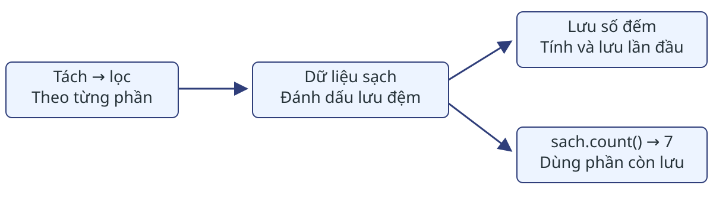
Biến đổi ghi cách tạo dữ liệu; hành động mới yêu cầu tính kết quả.
Để dùng lại, thêm sach.cache() trước lệnh lưu kết quả ở trang trước.
Trong giả mã trước, flatMap, filter, map, reduceByKey tạo kế hoạch biến đổi; saveAsTextFile là hành động. Nếu muốn dùng dữ liệu sạch cho cả lưu số đếm theo từ và sach.count(), đặt sach.cache() trước hành động đầu. Lần đầu tính tới đâu thì lưu các phần đó tới đó; cache() tự nó không tính ngay dữ liệu. Hành động sau có thể dùng lại những phần còn được lưu, tránh tách/lọc lại chúng. Nếu không lưu hoặc phần đã bị loại, có thể phải tính lại. RDD cache mặc định trong bộ nhớ; không vừa thì một số phần không được lưu, không tự bảo đảm chuyển sang đĩa. persist với mức lưu phù hợp có thể dùng cả bộ nhớ và đĩa. Không áp dụng khẳng định mọi phép biến đổi tránh mạng: reduceByKey có thể cần trao đổi dữ liệu giữa các phần. Nguồn: MMDS 2.4.3, trang 46–47, Ví dụ 2.9; Apache Spark RDD Programming Guide, RDD Operations và RDD Persistence.
Tính lại phần dữ liệu bị mất
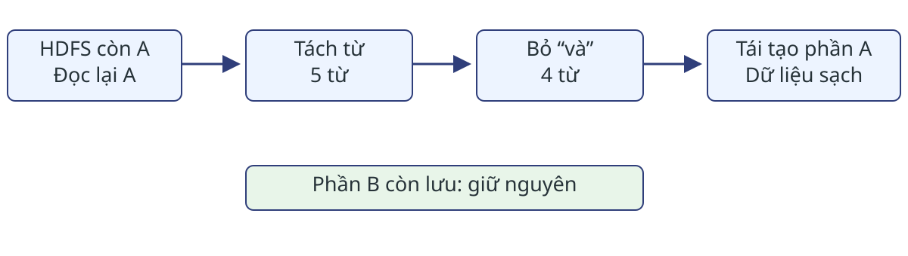
Spark ghi lại các phép biến đổi đã tạo từng tập dữ liệu.
Câu hỏi: Phần sạch của A mất, phần của B còn. Cần tính lại phần nào?
Giả sử A và B nằm trong hai phần dữ liệu khác nhau, nguồn HDFS còn truy cập được và các phép tách/lọc xác định. Nếu chỉ phần sạch A bị mất và không còn trung gian phù hợp, đọc lại phần A, tách rồi lọc; giữ phần B còn lưu. Tên A/B chỉ minh họa một tài liệu trong mỗi phần, không phải quy định một tài liệu là một phần. Lịch sử tạo dữ liệu này gọi là dòng dõi. Khôi phục đi theo phụ thuộc, từ nguồn còn tồn tại tới phần cần dùng. Ví dụ là chuỗi tách/lọc theo từng phần; sau một phép nhóm khóa hoặc trao đổi dữ liệu, việc tính lại có thể cần đầu vào từ nhiều phần. Không suy ra mọi lỗi luôn chỉ đọc một tài liệu hoặc cache thay thế lưu trữ bền vững. Nguồn: MMDS 2.4.3, Ví dụ 2.10, trang 47; Apache Spark RDD Guide, RDD Persistence.
Hadoop MapReduce và Spark
Loại Cách biểu diễn
Hadoop MapReduce Công việc Map → nhóm → Reduce Spark Chuỗi biến đổi trên RDD
Spark có thể đọc dữ liệu trực tiếp từ HDFS; Spark không phải là hệ thống thay thế HDFS.
Câu hỏi: trong ví dụ đếm từ, bước nào cần gom các cặp cùng từ từ các phần?
Nguồn: Apache RDD Guide; MMDS 2.4.3, tr. 46–48. Trả lời câu hỏi: reduceByKey. Phép reduceByKey có thể cần phân phối lại dữ liệu theo khóa. Dữ liệu lưu đệm và trao đổi có thể dùng bộ nhớ hoặc đĩa; không kết luận Spark luôn nhanh hơn Hadoop MapReduce. Phần 2.5 sẽ tính lượng dữ liệu mỗi tác vụ nhận.
2.5 · Đếm dữ liệu mỗi tác vụ nhận
Dùng lại D1 “dữ liệu lớn” và D2 “lớn lớn” ở mục 2.2.
Đếm lượng dữ liệu mỗi tác vụ nhận, kể cả đọc cục bộ.
D1 phát ba cặp (dữ,1), (liệu,1), (lớn,1); D2 phát hai cặp (lớn,1). Chưa gộp cục bộ, Reduce nhận đủ năm cặp. Bộ đếm đo kích thước dữ liệu chứ không chỉ số tài liệu. Đặt tại nơi nhận để mỗi lần một tác vụ đọc được tính một lần.
Nguồn: MMDS, Ví dụ 2.1, trang 25–26; mô hình 2.5.1, trang 53–55. D1/D2 là minh họa Việt hóa đã dùng ở mục 2.2.
Từ hai bộ đếm đến tổng chi phí
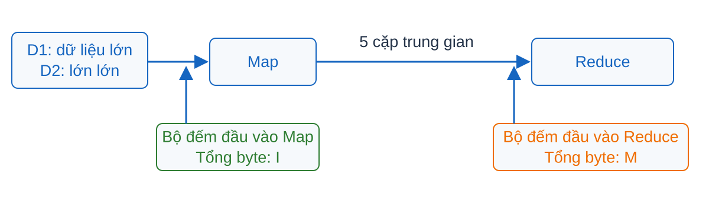
$I$: tổng byte vào Map; $M$: tổng byte vào Reduce (không phải ma trận).
$C = I + M$
Mô hình 2.5.1: chi phí truyền thông của một tác vụ bằng kích thước đầu vào của nó, kể cả đọc cục bộ; cộng trên mọi tác vụ. Đầu ra cuối chỉ được đếm khi một tác vụ sau đọc nó, tức trở thành đầu vào của tác vụ đó. $M$ ở đây là kích thước trung gian Reduce nhận, không phải ma trận $M$ ở mục 2.3; khác mô hình $I+2M+O$ của slide tham khảo. Nguồn: MMDS, 2.5.1, trang in 53–55.
Năm cặp trung gian tạo 5B byte
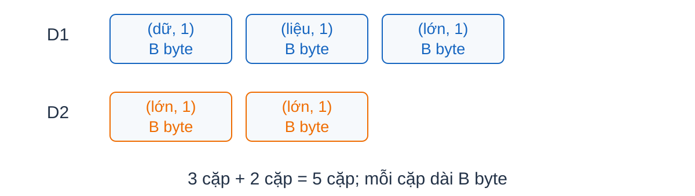
Giả sử mỗi cặp dài $B$ byte: $M=3B+2B=5B$.
$C=I+5B$
Đếm từng ô trên hình: ba cặp của D1, hai cặp của D2. Không loại các cặp lặp vì chúng biểu diễn những lần xuất hiện khác nhau. B là giả thiết kích thước cố định để minh họa phép đếm, không phải độ dài thực của mọi từ. I là tổng byte văn bản đầu vào Map.
Nguồn: MMDS, Ví dụ 2.1, trang 25–26; 2.5.1, trang 53–55.
Gộp trong D2 bớt một cặp
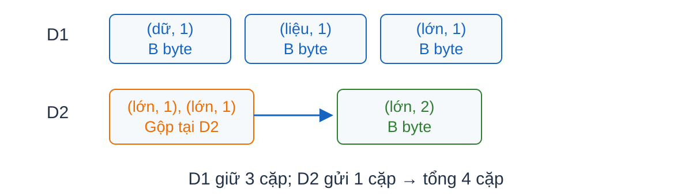
Hai cặp $(\text{lớn},1)$ gộp cục bộ thành $(\text{lớn},2)$: còn 4 cặp, $3+1=4$.
$C = I + 4B$
$I$ không đổi vì Map vẫn nhận cùng hai tài liệu; $B$ cố định như trước nên phần trung gian giảm từ 5B xuống 4B; kết quả lớn = 3 không đổi. Gộp chỉ giảm số cặp gửi đi, không giảm đầu vào. Nguồn: MMDS, Ví dụ 2.1 và 2.5.1, trang in 53–55.
Ma trận: một lần đọc, một lần nhận tích
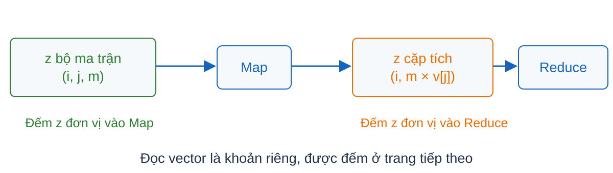
Đơn vị chuẩn hóa: mỗi bộ ma trận, số vector hoặc cặp tích tính một đơn vị.
$z$: số phần tử ma trận được lưu. $z$ bộ vào Map; mỗi bộ tạo một tích, nên $z$ cặp vào Reduce.
Giả thiết: đơn vị bản ghi chuẩn hóa — mỗi bộ ma trận, mỗi số vector và mỗi cặp tích có chi phí một đơn vị; chưa cộng vector, chưa cộng kết quả cuối vì mô hình chỉ cộng đầu vào tác vụ. Nguồn: MMDS, 2.3.2, 2.5.1 và Bài tập 2.5.1(a), trang in 32, 54–55, 59.
Một dải vector có thể được đọc nhiều lần
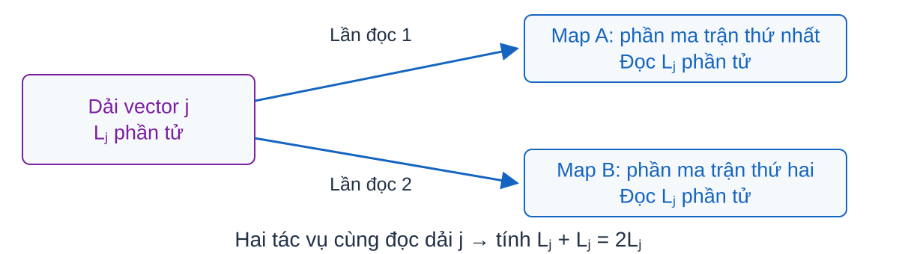
$j$ là chỉ số dải; $L_j$ là số phần tử của dải đó.
Tổng quát: $a_j$ tác vụ đọc $\Rightarrow$ $a_j L_j$
Định nghĩa: $j$ chỉ là chỉ số của dải, không phải chỉ số cột của phép nhân ma trận; $a_j$ là số tác vụ đọc dải đó. Giả thiết: vector được lưu một bản không đồng nghĩa với chỉ đọc một lần — mỗi tác vụ đọc toàn dải nó cần. Nguồn: MMDS, 2.3.2, 2.5.1 và Bài tập 2.5.1(a), trang in 32, 54–55, 59.
Ghép ba khoản chi phí
$C = 2z + \sum_j a_j L_j$
Đơn vị bản ghi chuẩn hóa: mỗi bộ, số và cặp là một đơn vị.
Trường hợp quen thuộc: mỗi dải một tác vụ và $\sum_j L_j = n$ cho $2z+n$; mỗi dải $a$ tác vụ cho $2z+an$. Khi tính bằng byte: $C = zB_M + (\sum_j a_jL_j)B_v + zB_P$ với kích thước $B_M, B_v, B_P$. Nguồn: MMDS, 2.3.2, 2.5.1 và Bài tập 2.5.1(a), trang in 32, 54–55, 59.
Tổng dữ liệu và nơi nhận nhiều nhất
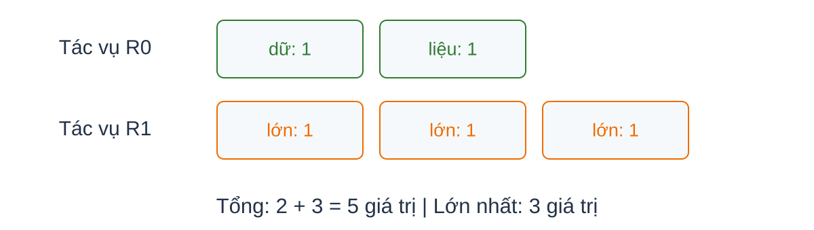
Đầu vào Reduce, chưa gộp: tổng $5B$ byte; lớn nhất $3B$ byte mỗi tác vụ.
Câu hỏi: Tổng giảm có đủ để suy ra nhanh hơn không?
Đáp án không: cần thêm tải nơi nhận nhiều nhất, số máy, CPU, bộ nhớ. Trong ví dụ R0 nhận 2 giá trị (dữ, liệu), R1 nhận 3 giá trị (lớn), đúng cách đếm ở 2.2. Nếu gộp D2: R0=2, R1=2 giá trị (từ D1 lớn 1 và D2 lớn 2), tổng 4B, max 2B — R1 vẫn nhận 2, không phải 1. Chuyển sang 2.6: đổi cách phân công để giảm bản gửi nhưng làm tăng dữ liệu một nơi nhận. Nguồn: MMDS, 2.5.2 và chuyển 2.6, trang in 55–56, 61.
Bài tập 2.5.1(a) · Nhân ma trận–vector
Xét thuật toán chia dải ở mục 2.3.2.
Câu hỏi: Biểu diễn chi phí truyền thông theo kích thước ma trận và vector.
Sản phẩm: bảng đầu vào Map/Reduce; nêu số lần đọc từng dải vector.
Gọi z là số phần tử ma trận được lưu, L_j là độ dài dải vector j, a_j là số Map task cần đọc dải đó. Mỗi bộ ma trận được đọc một lần, nên Map đọc z+Σ_j a_j L_j đơn vị chuẩn hóa; mỗi bộ tạo một tích, Reduce đọc z. Tổng C=2z+Σ_j a_j L_j. Nếu mỗi dải dùng đúng một Map task và Σ_j L_j=n thì C=2z+n. Nếu có nhiều task cho một dải, không được mặc định vector chỉ đọc một lần. Nếu ma trận đặc z=n². Nếu phân biệt kích thước bộ ma trận, số vector và cặp trung gian bằng B_M,B_v,B_P byte, C=zB_M+(Σ_j a_jL_j)B_v+zB_P. Chưa dùng gộp cục bộ tích theo hàng. Kết quả vector cuối không được đếm trực tiếp theo mô hình này. Hướng dẫn chấm: định nghĩa đơn vị và số lần đọc; đếm Map; đếm Reduce; kết luận điều kiện 2z+n.
Nguồn: MMDS, Chương 2, Bài tập 2.5.1(a), trang in 59 / PDF 40; 2.3.2.
Trở về tổng kết
2.6 · Phân chia ảnh để giảm số bản gửi
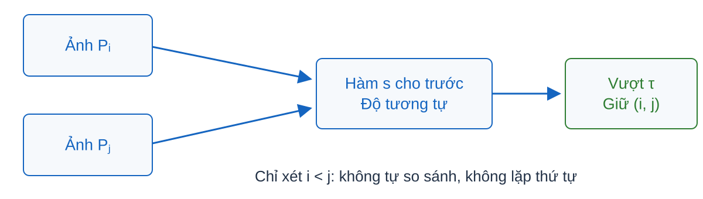
$N=10^6$ ảnh; $B=10^6$ byte/ảnh. $B$ ở đây đo ảnh, không còn đo cặp từ.
Cho độ tương tự đối xứng $s$ và ngưỡng $\tau$. Trả mỗi cặp $i<j$ có $s(P_i,P_j)>\tau$ đúng một lần.
Mọi cặp ảnh khác nhau đều phải được xét.
Giả thiết: trong mô hình nguồn, mọi cặp đều phải được xét; chưa có cách bỏ qua cặp. Đối xứng của s cho phép xét cặp không thứ tự. Nguồn: MMDS, 2.6.2, trang in 62–63.
Một ảnh phải đến nhiều cặp
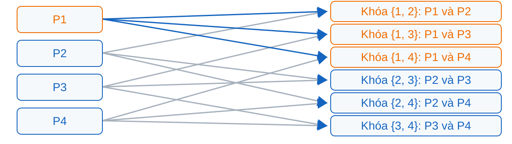
Trong hình: mỗi ảnh gửi đến 3 khóa; mỗi khóa nhận 2 ảnh.
Với $N$ ảnh, Map gửi $P_i$ đến mọi khóa $\{i,j\}$, $j\ne i$.
Map(i,P_i): duyệt mọi j khác i, phát (cặp chỉ số đã sắp tăng, (i,P_i)). Reduce của khóa {i,j} nhận đúng hai ảnh, tính s(P_i,P_j), phát (i,j) nếu vượt tau. Mỗi cặp có duy nhất khóa nên được xét đúng một lần. Các vòng duyệt hữu hạn; giả sử s kết thúc. Nếu N nhỏ hơn hai, không phát cặp nào.
Hình bốn ảnh dùng lại Ví dụ 2.19, Hình 2.9, mục 2.6.3, trang 64–65; đưa lên đây để chạy tay thuật toán mục 2.6.2, trang 62–63. Bốn ảnh có ba nơi nhận mỗi ảnh; không nhầm với 999999 nơi của kho một triệu ảnh.
Từ số bản gửi đến số byte
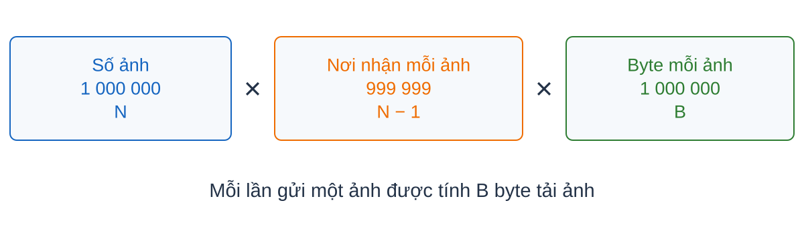
Chỉ tính tải ảnh trung gian; chưa gồm đầu vào Map $NB$ và nhãn cặp.
$N(N-1)B \approx 10^{18}$ byte
Phạm vi: chỉ tính tải ảnh trung gian Map gửi Reduce; chưa gồm đầu vào Map $NB$ và nhãn/chi phí phụ. Với bốn ảnh: $4\times3\times B=12B$. Nếu cộng theo mô hình 2.5 thì thêm $NB$. Nguồn: MMDS, 2.6.2, trang in 62–63.
Đặt tên hai đại lượng vừa đếm
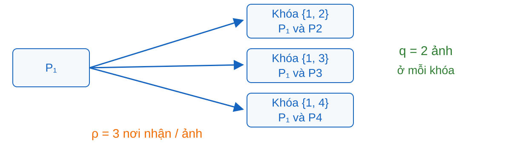
$q$: cận trên số giá trị nhận tại một khóa Reduce; $\rho$: số cặp phát trung bình trên mỗi đầu vào.
Với bốn ảnh: $q=2$, $\rho=3$; toàn $N$ ảnh: $q=2$, $\rho=N-1$.
Giả thiết: $q$ đếm số giá trị theo khóa, không phải số máy hay số tác vụ Reduce — một khóa một khái niệm (tr64 phân biệt reducer và Reduce task). Đại lượng $\rho$ là trung bình số cặp phát trên mỗi đầu vào; trong ví dụ bốn ảnh, mỗi khóa nhận 1 bản của mỗi ảnh nên $\rho$ cũng bằng số nơi nhận/ảnh — không khái quát hóa với mọi thuật toán. Số bản gửi này không phải số bản sao khối trong hệ tệp; $qB$ chỉ là tải ảnh nhận, không có nghĩa toàn bộ nằm trong RAM. Nguồn: MMDS, 2.6.1–2.6.2, trang in 61–63.
Gom nhóm để dùng lại ảnh
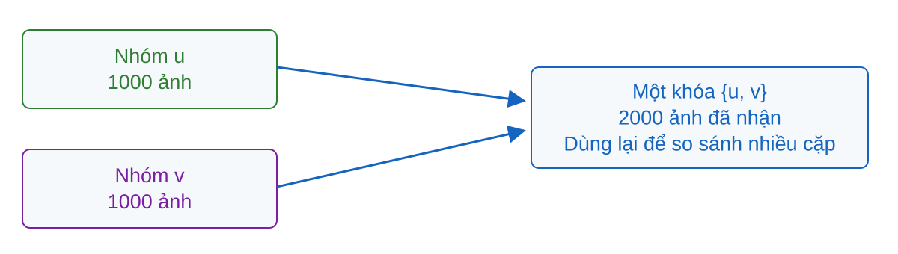
Chia $N=10^6$ ảnh thành $g=1000$ nhóm đều, mỗi nhóm 1000 ảnh. Một nơi nhận 2 nhóm, tức 2000 ảnh, rồi so sánh nhiều cặp bằng ảnh đã nhận.
Giả thiết: chia đều để mỗi nhóm cùng cỡ; ý tưởng là dùng lại một ảnh cho nhiều phép so sánh thay vì gửi lại mỗi lần. Ở bước này, hai nhóm đã có mặt tại cùng một nơi; cần đếm số nơi nhận mỗi ảnh để tính phần trung gian. Nguồn: MMDS, 2.6.2, trang in 63–64.
Đếm lại nơi nhận và số ảnh
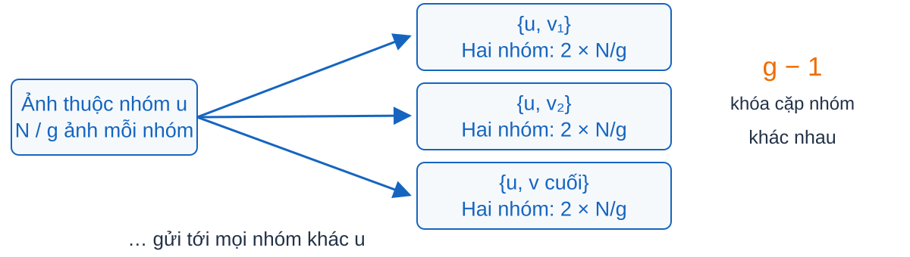
Một nhóm ghép với 999 nhóm khác; mỗi khóa nhận hai nhóm, mỗi nhóm 1000 ảnh.
$q = 2N/g = 2000$, $\rho = g-1 = 999$
Phép đếm: nhóm $u$ ghép với $g-1$ nhóm khác; mỗi nơi nhận 2 nhóm, mỗi nhóm $N/g$ ảnh nên $q=2N/g$. Mỗi ảnh thuộc một nhóm $u$ nên được gửi đến $g-1=999$ khóa $\{u,v\}$, $v\ne u$. Nguồn: MMDS, 2.6.2, trang in 63–64.
Gom nhóm giảm số byte trung gian
Vẫn chỉ tính tải ảnh trung gian; mỗi ảnh nay đến 999 nơi.
$N(g-1)B = 9{,}99\times10^{14}$ byte
So sánh: giảm so với $\approx10^{18}$ byte của cách từng cặp. Phạm vi giống trước: chỉ tải ảnh trung gian, chưa gồm đầu vào Map $NB$. Không khẳng định giảm thời gian, tính toán hay RAM đủ — đó là các thước đo khác. Nguồn: MMDS, 2.6.2, trang in 63–64.
Mỗi cặp được so sánh đúng một nơi
Cặp chéo $u,v$ do nơi $\{u,v\}$ so sánh; cặp nội bộ nhóm $u$ chỉ giao cho $\{u,\text{nhóm kế tiếp}\}$; nhóm cuối quay về 0.
Đánh số nhóm 0 đến g−1 với g=1000. Map của ảnh thuộc nhóm u phát ảnh đến mọi khóa cặp nhóm {u,v}, v khác u, kèm mã nhóm và mã ảnh. Reduce so sánh mọi cặp chéo hai nhóm. Ngoài ra, chỉ so sánh các cặp nội bộ nhóm u nếu khóa chứa nhóm kế tiếp của u theo vòng; phát chỉ số tăng dần khi s vượt tau.
Một cặp chéo có duy nhất cặp nhóm chứa nó. Một cặp nội bộ có duy nhất khóa được giao. Hai loại không giao nhau và phủ mọi cặp khác ảnh, do đó không thiếu và không lặp. Duyệt hữu hạn, s kết thúc nên thuật toán dừng. Trong hình v là nhóm kế tiếp của u; chỉ trích hai ảnh mỗi nhóm. Cặp nội bộ v được giao nơi kế tiếp, không lặp ở đây.
Nguồn: MMDS, 2.6.2, trang 63–64; đổi đánh số nhóm thành 0..g−1.
Số cặp phải xét vẫn giữ nguyên
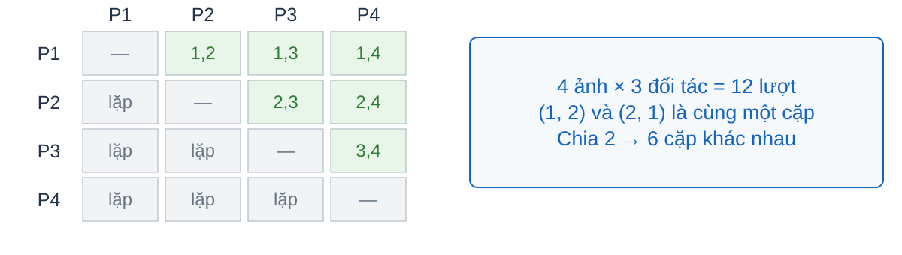
$N$ ảnh, mỗi ảnh được so sánh với $N-1$ ảnh; chia 2 để bỏ đếm đôi:
$N(N-1)/2$
Với dữ kiện của sách: với $N=10^6$ là 499 999 500 000. Đây là số lần gọi s, chưa phải thời gian chạy. Nếu mỗi lần gọi tốn cố định c_s đơn vị thì công việc so sánh là c_s N(N−1)/2; nếu không cố định phải cộng chi phí từng lần gọi. Chưa tính truyền ảnh, nhóm khóa và ghi đầu ra. Mỗi nơi nhận nhiều nhất: $1000^2 + 1000\cdot999/2 = 1\,499\,500$ — 1 000 000 cặp chéo cộng 499 500 cặp nội bộ được giao riêng. Nguồn: MMDS, 2.6.2, trang in 62–64.
Đánh đổi giữa bản gửi và dữ liệu mỗi nơi
Cách phân chia $q$ (ảnh/nơi) $\rho$ (nơi nhận/ảnh)
Mỗi cặp ảnh $2$ $999\,999$ Mỗi cặp nhóm $2000$ $999$
Mỗi nơi nhận $2000\times10^6=2\times10^9$ byte ảnh = 2 GB.
Câu hỏi: Lượng dữ liệu này đã đủ để kết luận nơi xử lý chạy được chưa?
Hai đại lượng đã được giải thích ở phần định nghĩa q và rho; bảng chỉ đổi cách chia. Đáp án: chưa — còn phụ thuộc RAM mỗi nơi, bộ nhớ phụ và chi phí hàm $s$. Kết 2.5: đếm chi phí; kết 2.6: chọn phân chia để đổi chi phí. Đọc thêm: cận dưới ở 2.6.3–2.6.7. Nguồn: MMDS, Chương 2, trang in 61–74.